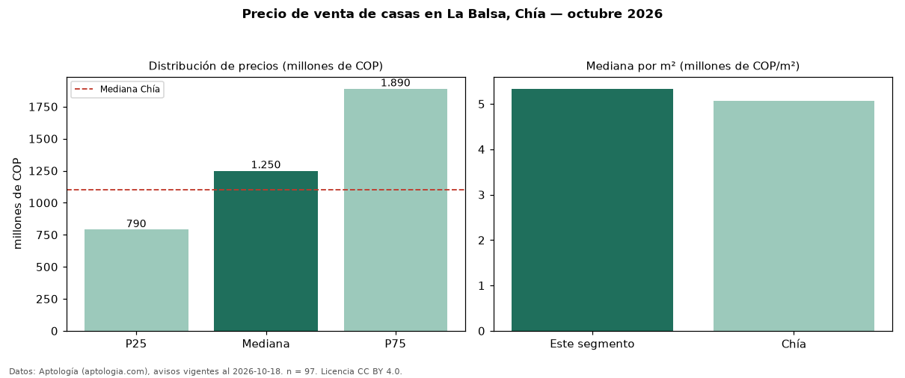

Precio de venta de casas en La Balsa, Chía — octubre 2026
Con 97 avisos vigentes, el precio mediano de casas en venta en La Balsa, Chía es COP 1,25 mil millones. Eso es 14 % por encima de la mediana de Chía para casas (COP 1,10 mil millones). Por metro cuadrado, la mediana es COP 5,33 millones/m² (n = 93 avisos con área), 5 % por encima de Chía (COP 5,06 millones/m²). El área mediana anunciada es 255 m². El segmento con más oferta es el de 3 o más habitaciones (97 avisos, mediana COP 1,25 mil millones). La mitad central de los avisos va de COP 790 millones a COP 1,89 mil millones (razón 2,4), una dispersión alta. La administración mediana declarada es COP 748.000 al mes (n = 80). Por precio mediano es el puesto 7 de 21 barrios de Chía con al menos 30 avisos de casas en venta (COP): en la franja media. Datos: Aptología (aptologia.com), CC BY 4.0 — https://www.aptologia.com/casas-en-venta/chia/la-balsa. Archivos: PDF, CSV con las cifras y gráfica PNG.

| Avisos únicos | 97 |
|---|---|
| Percentil 25 | COP 790.000.000 |
| Mediana | COP 1.250.000.000 |
| Percentil 75 | COP 1.890.000.000 |
| Mediana por m² | COP 5.333.333 |
Fuente: avisos vigentes de portales inmobiliarios recopilados por Aptología, deduplicados (mínimo 30 avisos únicos por celda). Precios pedidos, no cerrados. Fecha: 2026-10-18.